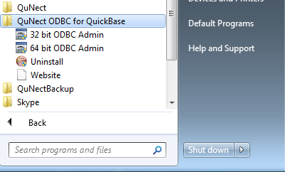
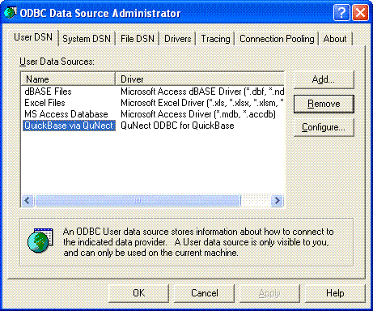
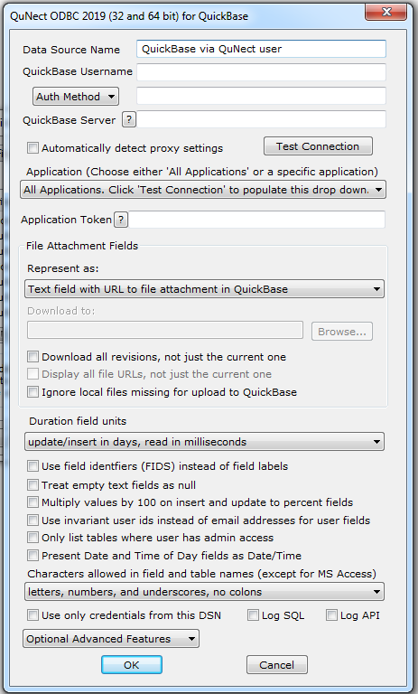
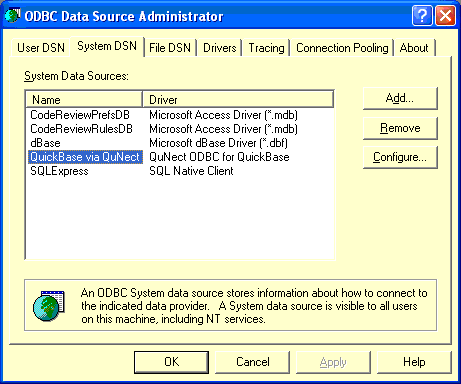

Application Note for QuNect ODBC for QuickBase
Getting Started
After installing QuNect ODBC for QuickBase you should enter your Quickbase username and password for the two (or four on 64 bit opreating systems) Data Sources that were created by the installation process. Click on the Start Menu and click on the All Programs then on QuNect ODBC for QuickBase.

Then click on 32 bit ODBC Admin.
You'll end up at the dialog below:
Double click on QuickBase via QuNect user. You'll see the following dialog pop up.
Enter your Quickbase username and password. You will have a Unique URL like https://mycompany.quickbase.com you need to enter server name under Quickbase Server. Do not leave this blank or enter www.quickbase.com!.
You can use a preexisitng QuNect application token by reading the instructions on how to use an existing application token. If you don't have a preexisting application token you can create your own application token. Please read the section entitled Create and assign an application token on the Quickbase help page entitled Application Tokens.
If your LAN (local area network) environment requires the use of a proxy server then you should check the box Automatically detect proxy settings. You can leave this box unchecked, but if you find that QuNect ODBC for QuickBase returns an error message [QuNect][Quickbase]A connection with the server could not be established 12029 then checking this box will probably resolve this error. If you do not need a proxy server to connect to the Internet checking this box will introduce a fifteen second delay for every connection that is made to Quickbase. So only check this box if you need to. Click OK to save this information. Your User DSN is now configured.
Now let's move on to your System DSN. Back in the ODBC Data Source Administrator dialog, click on the System DSN tab. Then double click on QuickBase via QuNect 32 bit. Enter the same information as above. Click OK to save this information. Congratulations! Your QuickBase via QuNect DSNs are fully configured. Now click on OK to close the ODBC Data Source Administrator dialog.
Now click on the Start Menu and click on the All Programs then on QuNect ODBC for QuickBase. Then look for 64 bit ODBC Admin. It will only be there on systems with a Windows 64 bit operating system. Before you click on this make sure the ODBC Data Source Administrator dialog is closed. After clicking on 64 bit ODBC Admin, repeat the steps above.